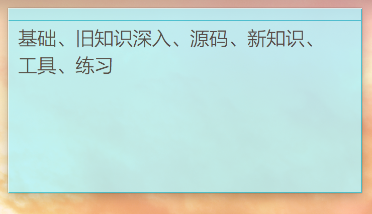

<!doctype html>
<html class="theme-next use-motion theme-next-mist">
<head>
    

<meta charset="UTF-8"/>
<meta http-equiv="X-UA-Compatible" content="IE=edge,chrome=1" />
<meta name="viewport" content="width=device-width, initial-scale=1, maximum-scale=1"/>


<meta http-equiv="Cache-Control" content="no-transform" />
<meta http-equiv="Cache-Control" content="no-siteapp" />


  <link rel="stylesheet" type="text/css" href="/vendors/fancybox/source/jquery.fancybox.css?v=2.1.5"/>


<link rel="stylesheet" type="text/css" href="/css/main.css?v=0.4.4"/>


    <meta name="description" content="重回原点" />


  <meta name="keywords" content="Hexo,next" />


  <link rel="alternate" href="/atom.xml" title="Dophin's Blog" type="application/atom+xml" />


  <link rel="shorticon icon" type="image/x-icon" href="/favicon.png?v=0.4.4" />


<meta name="description" content="概括
没有第一月充实
交了两个新朋友
每周出去玩一次，看一场电影
几乎都12点以后睡
坚持健身，每周2-3次，1次羽毛球
一本书都没看完，挪威森林拖了好久，最近才接着看
regulars遇到了瓶颈
没做周总结，日总结也做得不勤
刷了一拳超人，是目前看过最赞的

​    意识到一件事情，上个月状态好，不代表这个月状态好。状态不稳定，那么是有问题的。最主要的问题是待在安全区，脑瓜子没怎么挣扎。
​">
<meta property="og:type" content="article">
<meta property="og:title" content="网易实习第2月总结">
<meta property="og:url" content="http://www.dophin.me/2015/12/22/网易实习第2月总结/index.html">
<meta property="og:site_name" content="Dophin's Blog">
<meta property="og:description" content="概括
没有第一月充实
交了两个新朋友
每周出去玩一次，看一场电影
几乎都12点以后睡
坚持健身，每周2-3次，1次羽毛球
一本书都没看完，挪威森林拖了好久，最近才接着看
regulars遇到了瓶颈
没做周总结，日总结也做得不勤
刷了一拳超人，是目前看过最赞的

​    意识到一件事情，上个月状态好，不代表这个月状态好。状态不稳定，那么是有问题的。最主要的问题是待在安全区，脑瓜子没怎么挣扎。
​">
<meta property="og:image" content="http://www.dophin.me/./便签.png">
<meta property="og:updated_time" content="2015-12-29T15:38:57.000Z">
<meta name="twitter:card" content="summary">
<meta name="twitter:title" content="网易实习第2月总结">
<meta name="twitter:description" content="概括
没有第一月充实
交了两个新朋友
每周出去玩一次，看一场电影
几乎都12点以后睡
坚持健身，每周2-3次，1次羽毛球
一本书都没看完，挪威森林拖了好久，最近才接着看
regulars遇到了瓶颈
没做周总结，日总结也做得不勤
刷了一拳超人，是目前看过最赞的

​    意识到一件事情，上个月状态好，不代表这个月状态好。状态不稳定，那么是有问题的。最主要的问题是待在安全区，脑瓜子没怎么挣扎。
​">


<script type="text/javascript" id="hexo.configuration">
  var CONFIG = {
    scheme: 'Mist',
    sidebar: 'post'
  };
</script>

    <title> 网易实习第2月总结 // Dophin's Blog </title>
</head>
<body itemscope itemtype="http://schema.org/WebPage" lang="zh-Hans">
<!--[if lte IE 8]>
  <div style=' clear: both; height: 59px; padding:0 0 0 15px; position: relative;margin:0 auto;'>
    <a href="http://windows.microsoft.com/en-US/internet-explorer/products/ie/home?ocid=ie6_countdown_bannercode">
      
    </a>
  </div>
<![endif]-->

<script>
  (function(i,s,o,g,r,a,m){i['GoogleAnalyticsObject']=r;i[r]=i[r]||function(){
            (i[r].q=i[r].q||[]).push(arguments)},i[r].l=1*new Date();a=s.createElement(o),
          m=s.getElementsByTagName(o)[0];a.async=1;a.src=g;m.parentNode.insertBefore(a,m)
  })(window,document,'script','//www.google-analytics.com/analytics.js','ga');
  ga('create', 'UA-65608838-1', 'auto');
  ga('send', 'pageview');
</script>


<div class="container one-column page-post-detail">
    <div class="headband"></div>
    <header id="header" class="header" itemscope itemtype="http://schema.org/WPHeader">
        <div class="header-inner"><h1 class="site-meta">
  <span class="logo-line-before"><i></i></span>
  <a href="/" class="brand" rel="start">
      <span class="logo">
        <i class="icon-logo"></i>
      </span>
      <span class="site-title">Dophin's Blog</span>
  </a>
  <span class="logo-line-after"><i></i></span>
</h1>

<div class="site-nav-toggle">
  <button>
    <span class="btn-bar"></span>
    <span class="btn-bar"></span>
    <span class="btn-bar"></span>
  </button>
</div>

<nav class="site-nav">
  

  
    <ul id="menu" class="menu menu-left">
      
        
        <li class="menu-item menu-item-home">
          <a href="/" rel="section">
            <i class="menu-item-icon icon-home"></i> <br />
            首页
          </a>
        </li>
      
        
        <li class="menu-item menu-item-categories">
          <a href="/categories" rel="section">
            <i class="menu-item-icon icon-categories"></i> <br />
            分类
          </a>
        </li>
      
        
        <li class="menu-item menu-item-about">
          <a href="/about" rel="section">
            <i class="menu-item-icon icon-about"></i> <br />
            关于
          </a>
        </li>
      
        
        <li class="menu-item menu-item-archives">
          <a href="/archives" rel="section">
            <i class="menu-item-icon icon-archives"></i> <br />
            归档
          </a>
        </li>
      
        
        <li class="menu-item menu-item-tags">
          <a href="/tags" rel="section">
            <i class="menu-item-icon icon-tags"></i> <br />
            标签
          </a>
        </li>
      
    </ul>
  

  
    <div class="site-search">
      
  
<form class="site-search-form">
  <input type="text" id="st-search-input" class="st-search-input st-default-search-input" />
</form>
<script type="text/javascript">
  (function(w,d,t,u,n,s,e){w['SwiftypeObject']=n;w[n]=w[n]||function(){
    (w[n].q=w[n].q||[]).push(arguments);};s=d.createElement(t);
    e=d.getElementsByTagName(t)[0];s.async=1;s.src=u;e.parentNode.insertBefore(s,e);
  })(window,document,'script','//s.swiftypecdn.com/install/v2/st.js','_st');

  _st('install', '73stH3hVjegVsUDoEbxz','2.0.0');
</script>

<div class="site-search-toggle"></div>
    </div>
  
</nav>


        </div>
    </header>

    <main id="main" class="main">
        <div class="main-inner">
            <div id="content" class="content">
                

  <div id="posts" class="posts-expand">
    

  <article class="post post-type-normal " itemscope itemtype="http://schema.org/Article">
    <header class="post-header">

      
      
        <h1 class="post-title" itemprop="name headline">
          
          
            
              网易实习第2月总结
            
          
        </h1>
      

      <div class="post-meta">
        <span class="post-time">
          发表于
          <time itemprop="dateCreated" datetime="2015-12-22T23:10:03+08:00" content="2015-12-22">
            2015-12-22
          </time>
        </span>

        

        
          
            <span class="post-comments-count">
              &nbsp; | &nbsp;
              <a href="/2015/12/22/网易实习第2月总结/#comments" itemprop="discussionUrl">
                <span class="post-comments-count ds-thread-count" data-thread-key="2015/12/22/网易实习第2月总结/" itemprop="commentsCount"></span>
              </a>
            </span>
          
        
      </div>
    </header>

    <div class="post-body">

      
      

      
        <span itemprop="articleBody"><h1 id="概括">概括</h1><ul>
<li>没有第一月充实</li>
<li>交了两个新朋友</li>
<li>每周出去玩一次，看一场电影</li>
<li>几乎都12点以后睡</li>
<li>坚持健身，每周2-3次，1次羽毛球</li>
<li>一本书都没看完，挪威森林拖了好久，最近才接着看</li>
<li>regulars遇到了瓶颈</li>
<li>没做周总结，日总结也做得不勤</li>
<li>刷了一拳超人，是目前看过最赞的</li>
</ul>
<p>​    意识到一件事情，上个月状态好，不代表这个月状态好。状态不稳定，那么是有问题的。最主要的问题是待在安全区，脑瓜子没怎么挣扎。</p>
<p>​    以后还是不要高兴得太早…</p>
<h1 id="计划管理">计划管理</h1><p>​    上个月的目标是：</p>
<ol>
<li>深入了解git，优化构建流程。</li>
<li>每天下午5点之前完成任务，剩下的一些时间可以重构、优化、组件化。</li>
<li>每日做计划</li>
<li>抽时间完成「临时」</li>
</ol>
<p>​    1，2，4没有做到，3做到一部分。首先这4个目标我并没有跟进，我想以后应该放在某个显眼的位置，比如说便签上，并且周总结的时候跟进。</p>
<p>​    对于1来说，我觉得目标没定好，因为git目前用的不频繁，平均每天6、7次，操作也比较固定，实践机会少，那么看了书不能即学即用，不深刻，很快就会忘记。</p>
<p>​    对于2，总的来说只有2、3次在5点前完成了任务，主要原因是脑袋没第一个月转得勤（比如说同样的逻辑有多处，我会把这几处都写了再debug，这样出错了全都得改，而且出错的范围也增大，绝对得不偿失），白白消耗时间。重构、优化、组件化倒是进行的不错，不过分，该重构的才重构（比如说之前文件上传在四个地方都用到了，当时写是copy代码，这样一改动多处都要改动，于是重构成一个组件），该优化的才优化（比如tab懒编译可以减少请求），该组件化的才组件化（比如业务中多次用到的）。</p>
<p>​    对于3，任务多数是被分配的，自己主动安排的任务还是非常少，需要更强的自律。</p>
<p>​    对于4，我记得本来是放在「提醒」里的，后来不记得怎样就给删除了。所以需要记录。</p>
<p>​    总得来说我的计划管理实际上还处于低级水平，慢慢进步吧。    </p>
<p>====== 补充 2015.12.26</p>
<p>​    从周三起，我每天试着在记录。回顾了一下：周四调xtable花了1.5h，下午花了一下午整理收藏夹；周五看《you don’t know js》 第二章一半（没有记录时间）；周五中午12：25-12：50 生成递归模板，2：00-4：20完成数据向上传递，4：47-5：10、5：34-5：43、随后又花了15min看《you don’t know js》。在此时此刻，如果去掉那些时间信息，就变成了，三天做了：xtable，整理浏览器收藏夹，做treeView联动组件，看《you don’t know js》一章半。</p>
<p>​    现在看着，加了时间信息似乎并没有什么卵用，但当时做完一件事的时候知道花了多少时间，我想还是有意义的。一来可以大致了解自己目前的速度，二来有个督促作用（做记录会比不做记录更直观的感觉到时间的存在，告诫我时间在流逝）</p>
<p>​    回过头想一下，记录时间的确可以了解自己的速度吗？我觉得很难，比如说花1.5h来调xtable，说明了什么？想看书的话可以算字数，比如说读英文类技术书籍44词/min。但是像调xtable这个组件，我怎么衡量？编码速度n行/min？想想并没有什么意义，因为有些逻辑复杂的，只要几十行，所花费的时间就比普通的几百行代码花费的时间多，所以不论复杂程度都按n行/min来划分显然不妥。目前确实想不到什么好的办法来量化我的编码速度。不过因此就不记录编码所花的时间吗？我觉得还是有用的，对比两次类似的任务，我应该能大概知道我的速度是在提高还是降低。</p>
<p>​    那么最后来看看，这笔生意划不划算。</p>
<p>​    收获：更清楚的看到自己的速度（即使不能知道准确的速度情况，经对比之后，也大概能知道自己的速度有没有提高）；起一个督促作用。</p>
<p>​    付出：少量时间，目前来看每天最多花10多分钟；少量精力（有时候即使花很少精力都会觉得不爽。比如说我准备编码了，得打开奇妙清单&gt;任务记录 记录：几点开始；编码结束了或者到了途中，还得做同样的操作，并记录结束时间以及做了什么）。</p>
<p>​    So，可以记录时间。那么我现在的做法能得到这些收获吗？对于读书的速度我算是更清楚了，不过其它的还没有什么感觉；督促作用，能感受到。</p>
<h1 id="思想沉淀">思想沉淀</h1><ol>
<li>当某一个时间点达到了较好的状态，并不意味着这个状态会持续，所以心态应该摆得更平静一点。</li>
<li>我发现，只要我跳出安全区（什么是安全区？典型就是：对于一个问题，自然思路得出的解决方法受阻，于是不经深思就绕过，用其它方法解决，甚至降级解决），至少那段时间的学习会让我感到内心是充盈的。</li>
<li>遇到问题，先用自然思路思考。以前或多或少会凭借记忆力，现在几乎不会了。</li>
<li>乐意释放情感，以前容易把情感憋在肚子里。</li>
</ol>
<h1 id="问题">问题</h1><p>我觉得现在最大的问题有两个</p>
<ol>
<li>学习regularjs快到了不得不看源码的地步了，但是又担心花太多的时间，学习效率不高。regular的社区太不成熟，平时实在遇到不懂的问题，我会咨询海波大神（写regularjs的人），但是毕竟问多了怕烦着别人，自尊心也过不去。所以我想暂时弃掉regularjs，做毕业项目的时候用react。不过，我从来没有看过框架级别的源码，我想这是一个技术升华所必要克服的困难，希望明年一整年能实现吧…</li>
<li>陷入舒适区。应该是因为框架用的比较熟了。不过想想并非无新东西可以学了，我觉得自从我对regularjs抱了一种弃用的心态，就没有强迫过自己学习关于regularjs的新内容，我想这是不划算的，毕竟还在用，有很多实践机会。之前主要是看官方guide，其次是海波大神写的一些关于regular的博客。但实际上还有新东西可以学，源码暂且不说，目前版本是0.43，我们用的是0.4，那么新版本的new feature是可以学习的；其次，我才写了一个树型联动组件，雨森哥用regular写过类似的，我可以去对比学习；还有，相关的博客我也肯定是没有看完的。So，趁着实践机会多，还是希望自己能动起来。</li>
</ol>
<h1 id="杂七杂八">杂七杂八</h1><h2 id="印象最深刻的话">印象最深刻的话</h2><blockquote><p>就我个人感情而言，绿子倒像是个非常可贵的女孩。你为她倾心这点，从信上也看得一清二楚；而你对直子的一片痴情，我也明明白白。这并非什么罪过，只不过是大千世界里司空见惯之事。在风和日丽的天气里荡舟于美丽的湖面，我们会既觉得蓝天迷人，又深感湖水多娇——二者同一道理。</p>
<footer><strong>《挪威的森林》-- 玲子</strong></footer></blockquote>
<h2 id="最喜欢的产品">最喜欢的产品</h2><p>送给<a href="http://www.iconfont.cn" target="_blank" rel="external">iconfont</a>。</p>
<h2 id="最大的成就">最大的成就</h2><p>想了一下并没有印象深刻的。值得庆祝的是健身节奏比以前快多了，中途休息基本不到30s；重量更大；持续得也更久。练了1个半月，每周2-3次，「推」：50lb-&gt;90lb，「夹」：50lb-&gt;90lb，「大腿推」：80lb-&gt;140lb，「仰卧起坐」：40-&gt;50，「飞鸟」7.5kg-&gt;10kg。</p>
<h2 id="最开心的事">最开心的事</h2><p>《挪威的森林》，真好看！</p>
<h1 id="输出">输出</h1><ol>
<li>把目标放在便签上，周总结跟进</li>
</ol>
<h1 id="目标">目标</h1><ol>
<li>《You Don’t Know JS》Types &amp; Grammar、<em>this</em> &amp; Object Prototypes；《The Definitive Guide》Expression and Operators、Statements</li>
</ol>
</span>
      
    </div>

    <footer class="post-footer">
      

      
        <div class="post-nav">
          <div class="post-nav-prev post-nav-item">
            
          </div>

          <div class="post-nav-next post-nav-item">
            
              <a href="/2015/11/24/网易实习一个月总结/" rel="next">网易实习一个月总结</a>
            
          </div>
        </div>
      

      
      
    </footer>
  </article>


    <div class="post-spread">
      
    </div>
  </div>


            </div>

            

            
              <div class="comments" id="comments">
                
                  <div class="ds-thread" data-thread-key="2015/12/22/网易实习第2月总结/"
                       data-title="网易实习第2月总结" data-url="http://www.dophin.me/2015/12/22/网易实习第2月总结/">
                  </div>
                
              </div>
            
        </div>

        
  
  <div class="sidebar-toggle">
    <div class="sidebar-toggle-line-wrap">
      <span class="sidebar-toggle-line sidebar-toggle-line-first"></span>
      <span class="sidebar-toggle-line sidebar-toggle-line-middle"></span>
      <span class="sidebar-toggle-line sidebar-toggle-line-last"></span>
    </div>
  </div>

  <aside id="sidebar" class="sidebar">
    <div class="sidebar-inner">

      
        <ul class="sidebar-nav motion-element">
          <li class="sidebar-nav-toc sidebar-nav-active" data-target="post-toc-wrap" >
            文章目录
          </li>
          <li class="sidebar-nav-overview" data-target="site-overview">
            站点概览
          </li>
        </ul>
      

      <section class="site-overview">
        <div class="site-author motion-element" itemprop="author" itemscope itemtype="http://schema.org/Person">
          
          <p class="site-author-name" itemprop="name">Dophin</p>
        </div>
        <p class="site-description motion-element" itemprop="description">重回原点</p>
        <nav class="site-state motion-element">
          <div class="site-state-item site-state-posts">
            <a href="/archives">
              <span class="site-state-item-count">12</span>
              <span class="site-state-item-name">日志</span>
            </a>
          </div>

          <div class="site-state-item site-state-categories">
            <a href="/categories">
              <span class="site-state-item-count">4</span>
              <span class="site-state-item-name">分类</span>
              </a>
          </div>

          <div class="site-state-item site-state-tags">
            <a href="/tags">
              <span class="site-state-item-count">10</span>
              <span class="site-state-item-name">标签</span>
              </a>
          </div>

        </nav>

        
          <div class="feed-link motion-element">
            <a href="/atom.xml" rel="alternate">
              <i class="menu-item-icon icon-feed"></i>
              RSS
            </a>
          </div>
        

        <div class="links-of-author motion-element">
          
            
              <span class="links-of-author-item">
                <a href="https://github.com/DophinL" target="_blank">GitHub</a>
              </span>
            
              <span class="links-of-author-item">
                <a href="http://www.zhihu.com/people/dophin" target="_blank">Zhihu</a>
              </span>
            
              <span class="links-of-author-item">
                <a href="http://segmentfault.com/u/dophin" target="_blank">SegmentFault</a>
              </span>
            
          
        </div>

        
        
          <div class="cc-license motion-element" itemprop="license">
            <a href="http://creativecommons.org/licenses/by-nc-sa/4.0" class="cc-opacity" target="_blank">
              
            </a>
          </div>
        

        <div class="links-of-author motion-element">
          
        </div>

      </section>

      
        <section class="post-toc-wrap sidebar-panel-active">
          <div class="post-toc-indicator-top post-toc-indicator"></div>
          <div class="post-toc">
            
            
              <div class="post-toc-content"><ol class="nav"><li class="nav-item nav-level-1"><a class="nav-link" href="#概括"><span class="nav-number">1.</span> <span class="nav-text">概括</span></a></li><li class="nav-item nav-level-1"><a class="nav-link" href="#计划管理"><span class="nav-number">2.</span> <span class="nav-text">计划管理</span></a></li><li class="nav-item nav-level-1"><a class="nav-link" href="#思想沉淀"><span class="nav-number">3.</span> <span class="nav-text">思想沉淀</span></a></li><li class="nav-item nav-level-1"><a class="nav-link" href="#问题"><span class="nav-number">4.</span> <span class="nav-text">问题</span></a></li><li class="nav-item nav-level-1"><a class="nav-link" href="#杂七杂八"><span class="nav-number">5.</span> <span class="nav-text">杂七杂八</span></a><ol class="nav-child"><li class="nav-item nav-level-2"><a class="nav-link" href="#印象最深刻的话"><span class="nav-number">5.1.</span> <span class="nav-text">印象最深刻的话</span></a></li><li class="nav-item nav-level-2"><a class="nav-link" href="#最喜欢的产品"><span class="nav-number">5.2.</span> <span class="nav-text">最喜欢的产品</span></a></li><li class="nav-item nav-level-2"><a class="nav-link" href="#最大的成就"><span class="nav-number">5.3.</span> <span class="nav-text">最大的成就</span></a></li><li class="nav-item nav-level-2"><a class="nav-link" href="#最开心的事"><span class="nav-number">5.4.</span> <span class="nav-text">最开心的事</span></a></li></ol></li><li class="nav-item nav-level-1"><a class="nav-link" href="#输出"><span class="nav-number">6.</span> <span class="nav-text">输出</span></a></li><li class="nav-item nav-level-1"><a class="nav-link" href="#目标"><span class="nav-number">7.</span> <span class="nav-text">目标</span></a></li></ol></div>
            
          </div>
          <div class="post-toc-indicator-bottom post-toc-indicator"></div>
        </section>
      

    </div>
  </aside>


    </main>

    <footer id="footer" class="footer">
        <div class="footer-inner">
            <div class="copyright" >
  
  &copy; &nbsp; 
  <span itemprop="copyrightYear">2015</span>
  <span class="with-love">
    <i class="icon-heart"></i>
  </span>
  <span class="author" itemprop="copyrightHolder">Dophin</span>
</div>

<div class="powered-by">
  由 <a class="theme-link" href="http://hexo.io">Hexo</a> 强力驱动
</div>

<div class="theme-info">
  主题 -
  <a class="theme-link" href="https://github.com/iissnan/hexo-theme-next">
    NexT.Mist
  </a>
</div>


        </div>
    </footer>

    <div class="back-to-top"></div>
</div>

<script type="text/javascript" src="/vendors/jquery/index.js?v=2.1.3"></script>

  
  
  
    

  
    
  

  <script type="text/javascript">
    var duoshuoQuery = {short_name:"dophin"};
    (function() {
      var ds = document.createElement('script');
      ds.type = 'text/javascript';ds.async = true;
      ds.src = (document.location.protocol == 'https:' ? 'https:' : 'http:') + '//static.duoshuo.com/embed.js';
      ds.charset = 'UTF-8';
      (document.getElementsByTagName('head')[0]
      || document.getElementsByTagName('body')[0]).appendChild(ds);
    })();
  </script>
    

    
  
  
  <script type="text/javascript" src="/vendors/fancybox/source/jquery.fancybox.pack.js"></script>
  <script type="text/javascript" src="/js/fancy-box.js?v=0.4.4"></script>


  <script type="text/javascript" src="/js/helpers.js?v=0.4.4"></script>
  

  <script type="text/javascript" src="/vendors/velocity/velocity.min.js"></script>
  <script type="text/javascript" src="/vendors/velocity/velocity.ui.min.js"></script>

  <script type="text/javascript" src="/js/motion_global.js?v=0.4.4" id="motion.global"></script>


  <script type="text/javascript" src="/js/search-toggle.js"></script>


  
<script type="text/javascript" src="/js/bootstrap.scrollspy.js?v=0.4.4" id="bootstrap.scrollspy.custom"></script>


<script type="text/javascript" id="sidebar.toc.highlight">
  $(document).ready(function () {
    var tocSelector = '.post-toc';
    var $tocSelector = $(tocSelector);
    var activeCurrentSelector = '.active-current';

    $tocSelector
      .on('activate.bs.scrollspy', function () {
        var $currentActiveElement = $(tocSelector + ' .active').last();

        removeCurrentActiveClass();
        $currentActiveElement.addClass('active-current');

        $tocSelector[0].scrollTop = $currentActiveElement.position().top;
      })
      .on('clear.bs.scrollspy', function () {
        removeCurrentActiveClass();
      });

    function removeCurrentActiveClass () {
      $(tocSelector + ' ' + activeCurrentSelector)
        .removeClass(activeCurrentSelector.substring(1));
    }

    function processTOC () {
      getTOCMaxHeight();
      toggleTOCOverflowIndicators();
    }

    function getTOCMaxHeight () {
      var height = $('.sidebar').height() -
                   $tocSelector.position().top -
                   $('.post-toc-indicator-bottom').height();

      $tocSelector.css('height', height);

      return height;
    }

    function toggleTOCOverflowIndicators () {
      tocOverflowIndicator(
        '.post-toc-indicator-top',
        $tocSelector.scrollTop() > 0 ? 'show' : 'hide'
      );

      tocOverflowIndicator(
        '.post-toc-indicator-bottom',
        $tocSelector.scrollTop() >= $tocSelector.find('ol').height() - $tocSelector.height() ? 'hide' : 'show'
      )
    }

    $(document).on('sidebar.motion.complete', function () {
      processTOC();
    });

    $('body').scrollspy({ target: tocSelector });
    $(window).on('resize', function () {
      if ( $('.sidebar').hasClass('sidebar-active') ) {
        processTOC();
      }
    });

    onScroll($tocSelector);

    function onScroll (element) {
      element.on('mousewheel DOMMouseScroll', function (event) {
          var oe = event.originalEvent;
          var delta = oe.wheelDelta || -oe.detail;
          var self = this;

          this.scrollTop += ( delta < 0 ? 1 : -1 ) * 30;
          event.preventDefault();

          toggleTOCOverflowIndicators();
      });
    }

    function tocOverflowIndicator (indicator, action) {
      $(indicator).velocity('stop').velocity({
        opacity: action === 'show' ? 0.4 : 0
      }, { duration: 100 });
    }

  });
</script>


  <script type="text/javascript" id="sidebar.nav">
    $(document).ready(function () {
      var html = $('html');

      $('.sidebar-nav li').on('click', function () {
        var item = $(this);
        var activeTabClassName = 'sidebar-nav-active';
        var activePanelClassName = 'sidebar-panel-active';
        if (item.hasClass(activeTabClassName)) {
          return;
        }

        var currentTarget = $('.' + activePanelClassName);
        var target = $('.' + item.data('target'));

        currentTarget.velocity('transition.slideUpOut', 200, function () {
          target
            .velocity('stop')
            .velocity('transition.slideDownIn', 200)
            .addClass(activePanelClassName);
        });

        item.siblings().removeClass(activeTabClassName);
        item.addClass(activeTabClassName);
      });

      $('.post-toc a').on('click', function (e) {
        e.preventDefault();
        var offset = $(escapeSelector(this.getAttribute('href'))).offset().top;
        html.velocity('stop').velocity('scroll', {
          offset: offset  + 'px',
          mobileHA: false
        });
      });

      // Expand sidebar on post detail page by default, when post has a toc.
      var $tocContent = $('.post-toc-content');
      if (isDesktop() && CONFIG.sidebar === 'post') {
        if ($tocContent.length > 0 && $tocContent.html().trim().length > 0) {
          displaySidebar();
        }
      }
    });
  </script>


<script type="text/javascript">
    $(document).ready(function () {
        if (CONFIG.sidebar === 'always') {
            displaySidebar();
        }
    });
</script>


<!-- lazyload -->
<script type="text/javascript" src="/js/lazyload.js"></script>
<script type="text/javascript">
    jQuery(function () {
        jQuery("#posts img").lazyload({
            placeholder: "/images/loading.gif",
            effect: "fadeIn"
        });
    });
</script>
</body>
</html>
